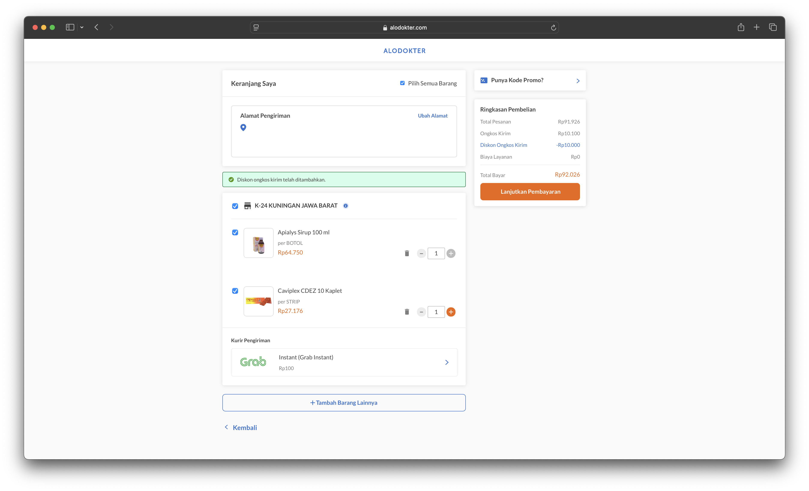

System Improvement
Alodokter Shop Fundamental Improvement

Project Overview
CompanyAlodokter
RolePrincipal Architect Fullstack
Year2023
Project Description
Led a comprehensive technical overhaul of Aloshop, Alodokter's medication purchasing platform, to address critical performance bottlenecks caused by growing product catalogs and pharmacy partner coverage.
The initiative focused on fundamental improvements to the system architecture to reduce processing times, enhance scalability, and reverse declining transaction volumes.
Key Challenges
- Increasing processing times due to expanding product catalogs and pharmacy network.
- Complex geospatial calculations to match users with nearest pharmacy partners.
- Performance degradation affecting transaction completion rates.
- Need for real-time delivery SLA calculations and inventory management.
Key Contributions
Performance Optimization
- Conducted comprehensive code refactoring to reduce execution time and resource consumption.
- Implemented advanced database indexing strategies in MongoDB for faster query performance.
- Optimized geospatial queries to efficiently match user locations with pharmacy partners.
- Reduced average API response times by over 60% through strategic optimizations.
Caching Implementation
- Designed and implemented a sophisticated Redis caching layer for frequently accessed data.
- Created intelligent cache invalidation strategies to maintain data consistency.
- Cached product catalogs, store information, and distance calculations to minimize redundant processing.
- Implemented tiered caching for different data types based on access patterns and update frequency.
Scalability Enhancements
- Containerized application components using Docker for consistent deployment.
- Orchestrated containers with Kubernetes to enable efficient horizontal scaling.
- Implemented auto-scaling based on traffic patterns and processing load.
- Designed a microservices architecture for critical system components.
Data Processing Improvements
- Integrated Elasticsearch for high-performance product and store searches.
- Implemented Sidekiq for asynchronous processing of non-critical operations.
- Created background job queues with different priority levels for optimized resource allocation.
- Developed comprehensive monitoring solutions to track system performance metrics.
Infrastructure Optimization
- Fine-tuned Google Cloud Platform resources to match application requirements.
- Implemented cloud-native solutions for improved reliability and disaster recovery.
- Established performance benchmarks and continuous monitoring systems.
- Created automated alerting for performance anomalies and potential issues.
Technology Stack
BackendRuby on Rails
DatabaseMongoDB
CachingRedis
SearchElasticsearch
Background ProcessingSidekiq
ContainerizationDocker
OrchestrationKubernetes
Cloud PlatformGoogle Cloud Platform (GCP)
Results
The fundamental improvements dramatically enhanced system performance, resulting in significantly faster processing times, improved user experience, and a substantial increase in successful transactions.
The optimized architecture provided a scalable foundation capable of accommodating continued growth in product catalog size and pharmacy partner network.